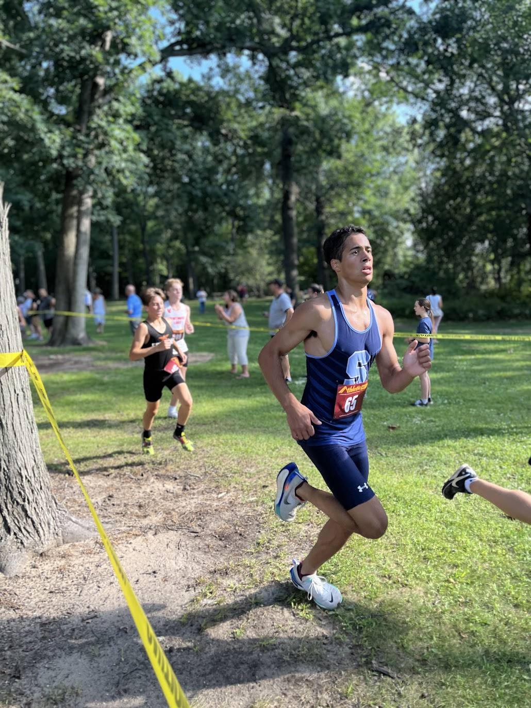
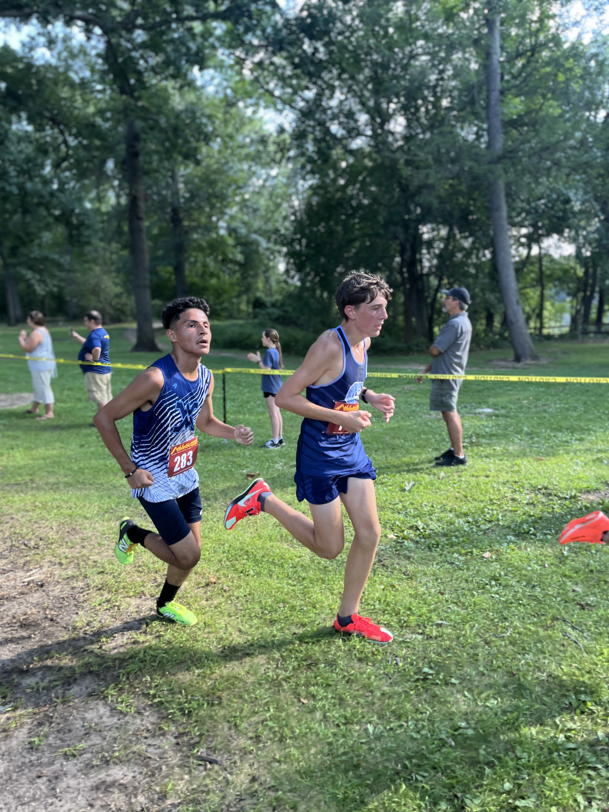
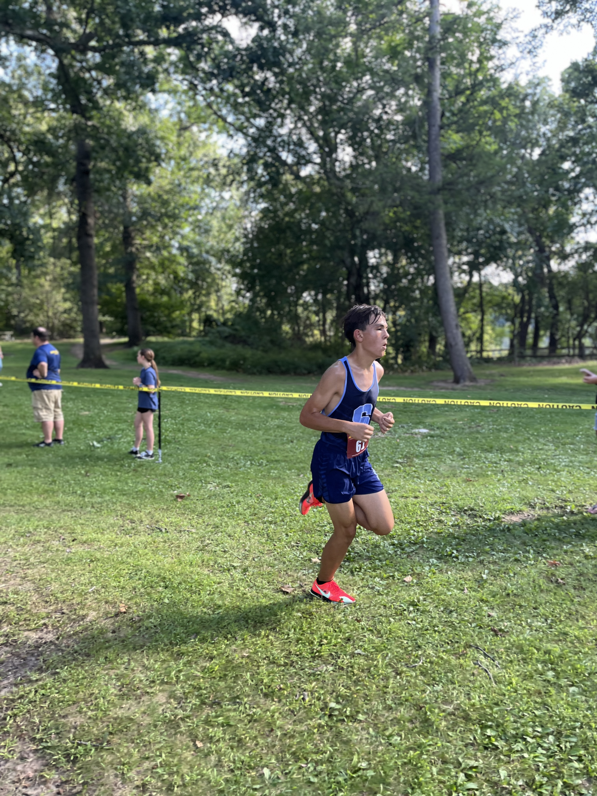
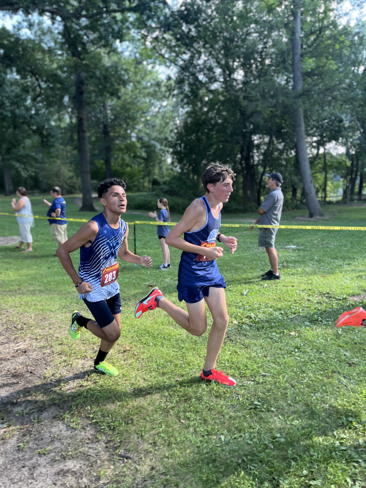
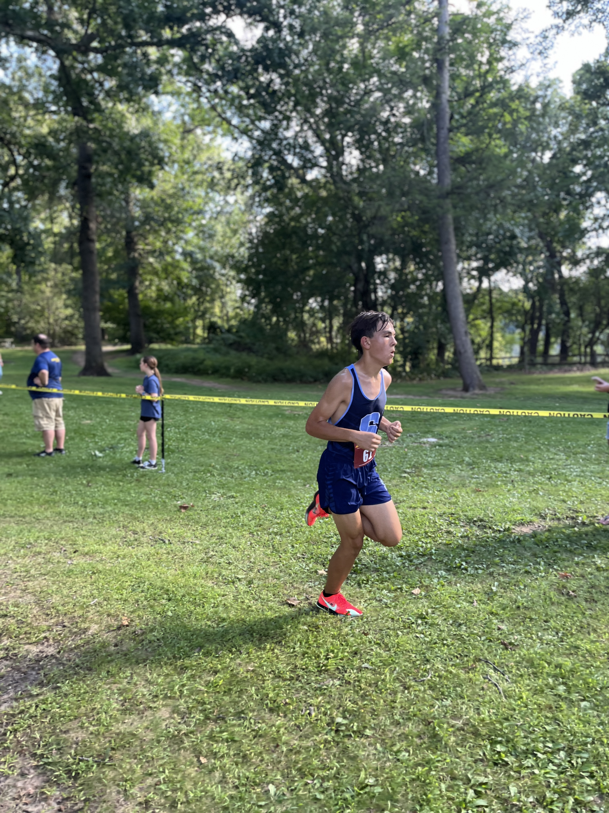

Athlete Results
| Name | Grade | Time | Place | Team | Profile Picture |
|---|---|---|---|---|---|
| Nicholas Yuan | 10 | 17:44.4 | 28 | Ann Arbor Skyline |  |
| Zeke Lafferty | 11 | 18:07.3 | 40 | Ann Arbor Skyline |  |
| Jack Robichaud | 12 | 18:23.7 | 47 | Ann Arbor Skyline |  |
| Oskar MacArthur | 9 | 18:37.5 | 58 | Ann Arbor Skyline |  |
| Kyle Krasan | 11 | 18:59.9 | 74 | Ann Arbor Skyline |  |


 


